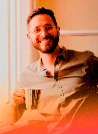

Nuestro fundador
Luis Asuaje
Profesor Luis: Filósofo, trovador, amante del mpb (música popular brasilera) pero es escritor, brasilero por error. Ganó un premio de literatura, amante de los libros, la música y el café. Luis Carlos Azuaje el ganador del XX Premio Transgenérico de la Fundación para la Cultura Urbana , se considera antes que nada, profesor, la profesión que ejerce en la ciudad de Buenos Aires. Sin embargo, cree que el ser escritor es un traje que le queda bien.